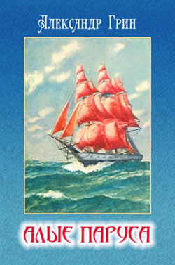

О нашем магазине
Адрес:

Наш офис находится по адресу: улица Профессора Попова, 5.
Всезнайка
Заказывайте книги одним кликом!
Алые паруса
Год издания: 1916—1922
Автор(ы): Александр Грин
Жанр(ы): Детсткая литература, сказка, неоромантизм
Подробное описание:
Александр Грин создал в своих произведениях свой особенный мир. В этом мире веет ветер дальних странствий, его населяют добрые, смелые, веселые люди. А в залитых солнцем гаванях с романтическими названиями — Лисс, Зурбаган, Гель-Гью — прекрасные девушки поджидают своих женихов. В этот мир — чуть приподнятый над нашим, одновременно фантастический и реальный, мы и приглашаем читателей.
Цитата из произведения:
Женщина рассказала печальную историю, перебивая рассказ умильным гульканием девочке и уверениями, что Мери в раю. Когда Лонгрен узнал подробности, рай показался ему немного светлее дровяного сарая, и он подумал, что огонь простой лампы — будь теперь они все вместе, втроём — был бы для ушедшей в неведомую страну женщины незаменимой отрадой.
Месяца три назад хозяйственные дела молодой матери были совсем плохи. Из денег, оставленных Лонгреном, добрая половина ушла на лечение после трудных родов, на заботы о здоровье новорождённой; наконец, потеря небольшой, но необходимой для жизни суммы заставила Мери попросить в долг денег у Меннерса. Меннерс держал трактир, лавку и считался состоятельным человеком.